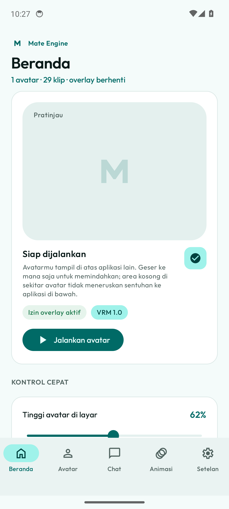
Status, izin, dan kontrol cepat
Kartu status membaca izin overlay dan model terpilih. Slider ukuran/opasitas langsung mengubah window overlay.
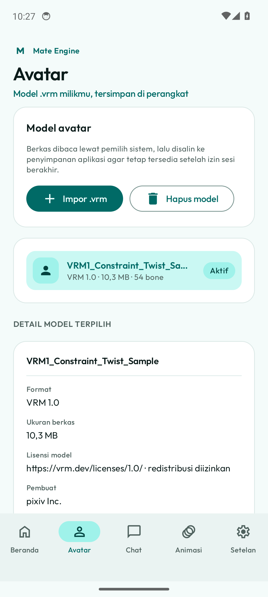
Metadata dibaca dari berkas
Format, lisensi, pemilik, dan jumlah bone berasal dari chunk JSON di dalam berkas VRM, bukan isian manual.
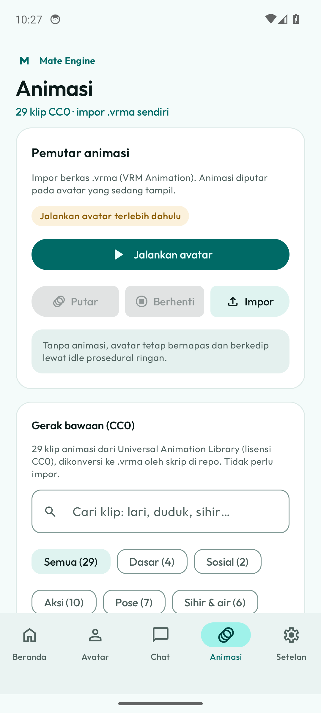
Pemutar .vrma yang tidak lagi berantakan
Aksi utama satu baris penuh, aksi sekunder berupa ikon 48dp, dan klip bawaan disusun dua kolom sehingga label seperti "Menari" tidak lagi membungkus jadi pilar vertikal.
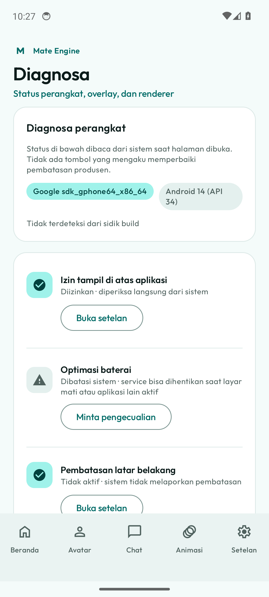
Kondisi perangkat apa adanya
Termasuk yang tidak menyenangkan: emulator melaporkan optimasi baterai membatasi service, dan itu ditampilkan sebagai peringatan.
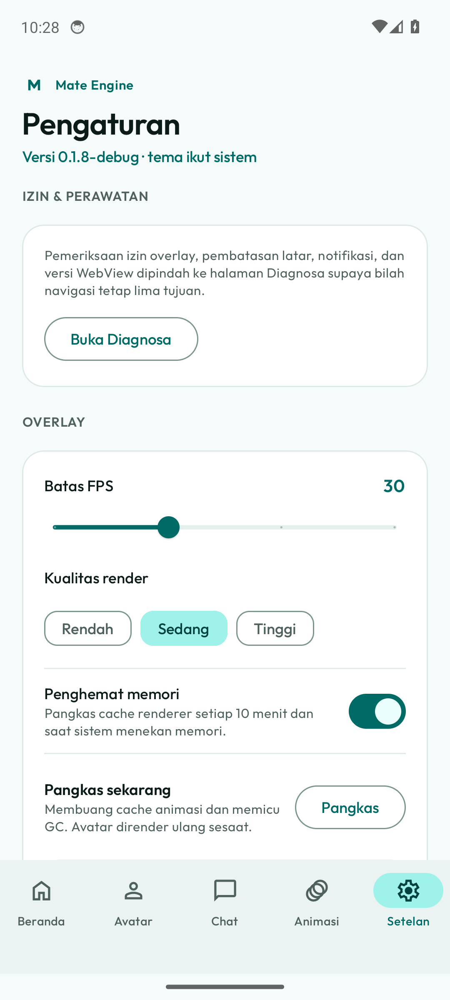
Beban render dan data
Batas FPS dan kualitas diteruskan ke renderer; penghapusan data hanya menyentuh salinan milik aplikasi.
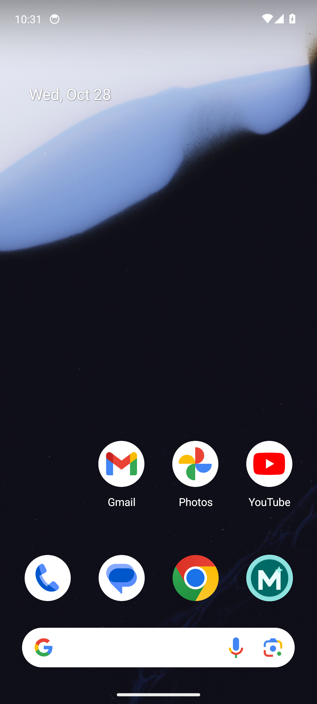
Avatar di atas aplikasi lain
Diambil setelah menekan tombol Jalankan avatar di aplikasi dan menekan Home. Tidak ada panel atau kartu di belakang avatar; piksel kosong benar-benar transparan. Pose lengan berasal dari pose rileks prosedural karena model uji tersimpan dalam T-pose.
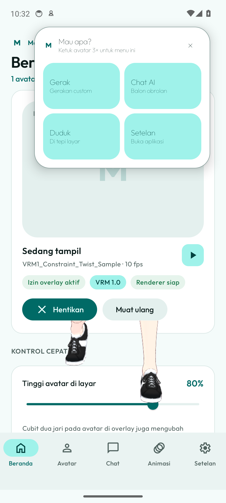
Status dari renderer, bukan karangan
FPS dan "Renderer siap" hanya terisi setelah renderer mengirim laporan lewat jembatan JavaScript. Angka 8 fps berasal dari emulator dengan renderer perangkat lunak.
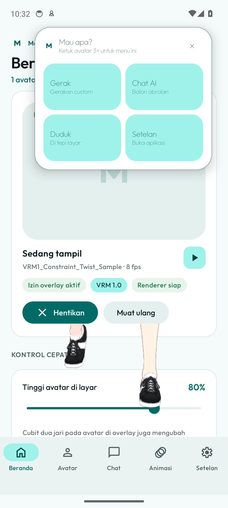
Bukti service hidup
Baris "Service overlay" berubah menjadi berjalan setelah renderer siap; bila layanan mati, statusnya kembali "Tidak berjalan".
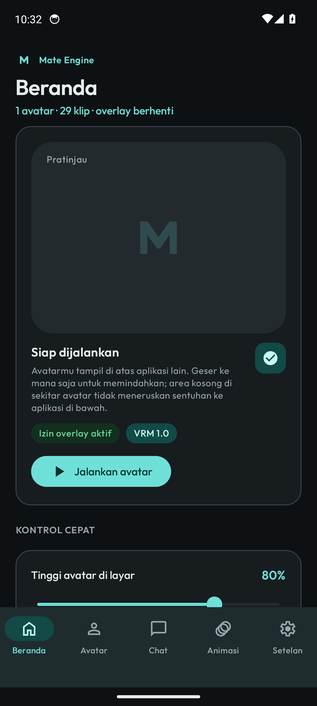
Mengikuti sistem
Tema diambil dari setelan sistem, tanpa dynamic color agar identitas produk tetap konsisten.
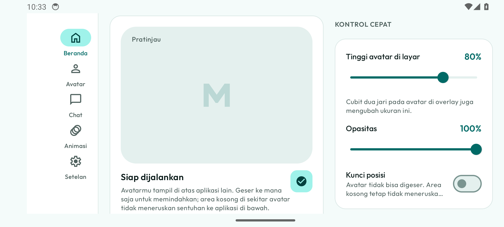
Navigation rail + dua kolom
Pada lebar ≥ 600dp, konten dipecah dua kolom dan navigasi pindah ke rail kiri.
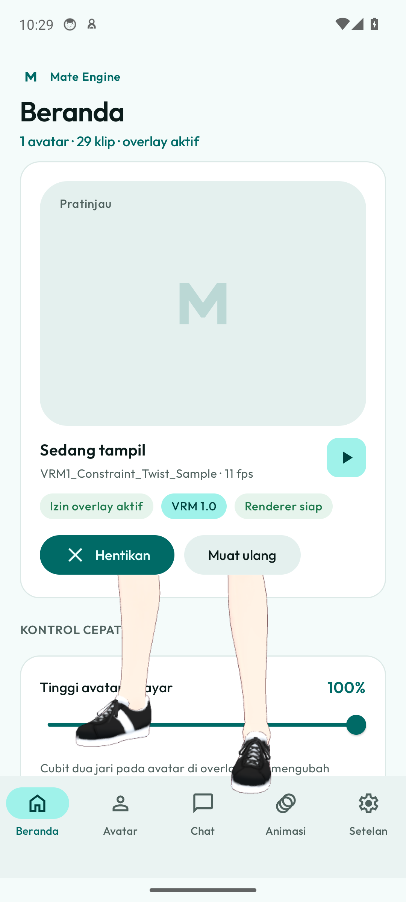
Tinggi 100% layar
Slider kini berarti tinggi avatar di layar. Pada 100% window overlay selebar layar dan avatar benar-benar besar — bukan lagi dua sistem skala yang saling meniadakan.
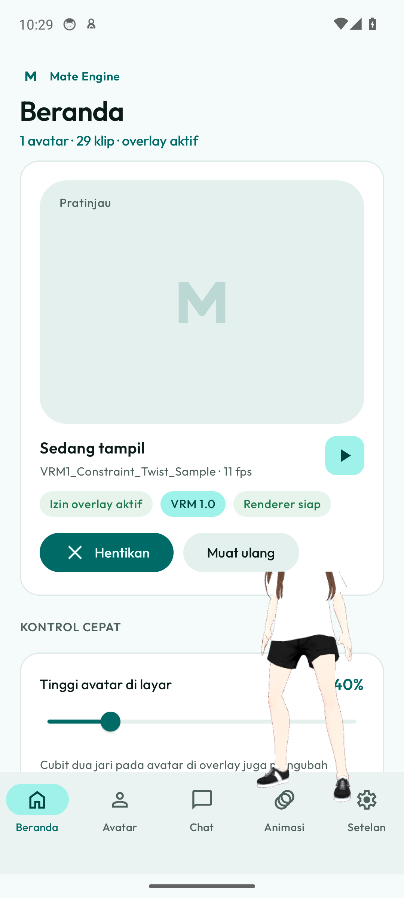
Tinggi 40% layar
Perbandingan langsung dengan gambar sebelumnya: ukuran berubah nyata, tersimpan, dan bisa diubah dengan cubit dua jari di overlay.
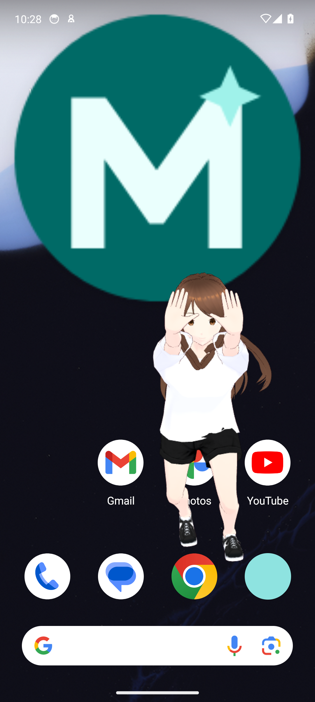
Tangan tidak lagi terangkat
Klip idle_loop hasil konversi memutar kedua lengan ke bawah. Jejak renderer mencatat sudut lengan terukur:
armLeftDeg 18,6 dan armRightDeg 21 — jauh di bawah ambang 45°.
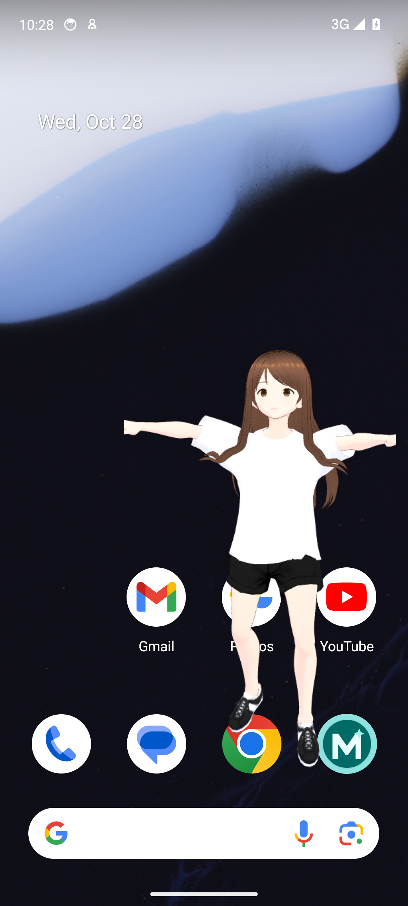
Dua tangkapan, dua pose
Skrip menangkap dua kali dengan jeda 1,8 detik; bila gambarnya identik, CI gagal. Sejak 0.1.5 pemeriksaan juga menolak build bila sudut lengan ≥ 45° saat diam.
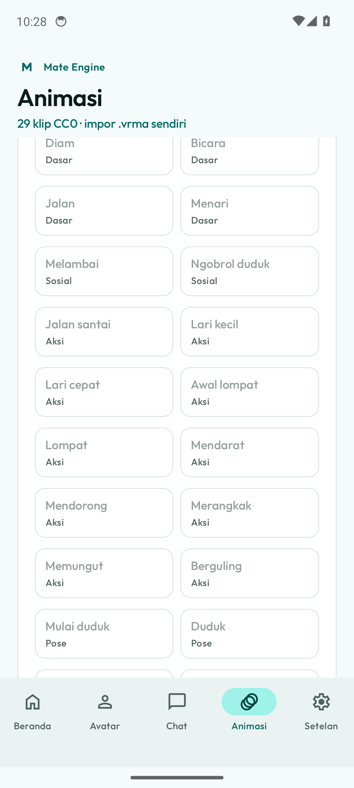
29 klip, bisa dicari
Angka di layar dihitung dari katalog (BuiltinClips.all.size), bukan ditulis tangan —
sebelumnya layar menyebut "Dua puluh satu klip" padahal aplikasi membundel 29. Kolom cari
mencocokkan label Indonesia maupun nama berkas, dan chip kategori membagi 29 klip menjadi
lima kelompok.
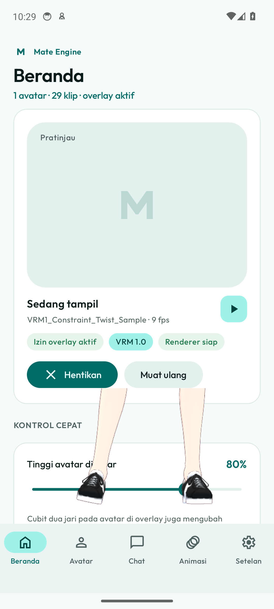
Kaki tidak lagi hilang saat duduk
Geseran kamera tetap saat duduk sudah dihapus; bingkai kini mengikuti kerangka. Renderer juga mengirim
angka celah tubuh ke setiap tepi kanvas, dan CI menolak build bila celah ≤ 1 px. Pada gambar ini
bodyGap = atas 109 px, bawah 111 px (bukan 0 px).
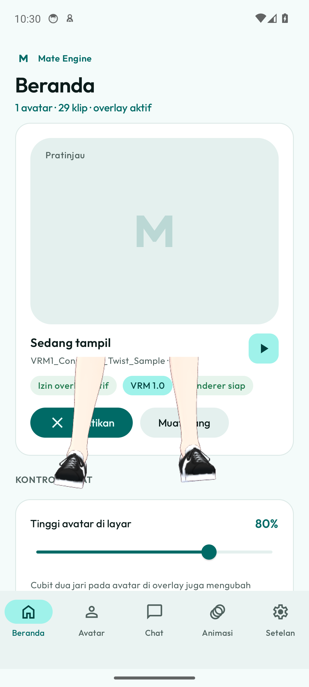
Digeser ke mana saja di layar
Swipe sungguhan dari tengah layar memindahkan avatar ke kiri-atas. Jendela overlay boleh keluar tepi layar
(selama 62% masih terlihat), jadi avatar skala 100% pun bisa dipindah — bukan lagi terkurung kotak 1,9:1.
Logcat mencatat overlay digeser ke (-327, -602), posisi negatif yang dulu mustahil.
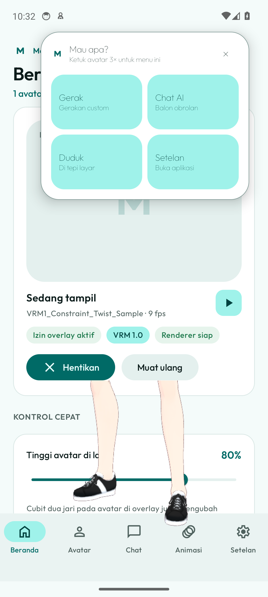
Ketuk tiga kali, menu muncul
Tiga ketukan beruntun pada avatar (jeda ≤ 700 ms, jarak ≤ 90 px) membuka panel kecil: Gerak, Chat AI, Duduk/Berdiri, dan Setelan. Gambar ini diambil setelah CI mengetuk avatar lewat perintah sentuh sungguhan, bukan lewat hook debug.
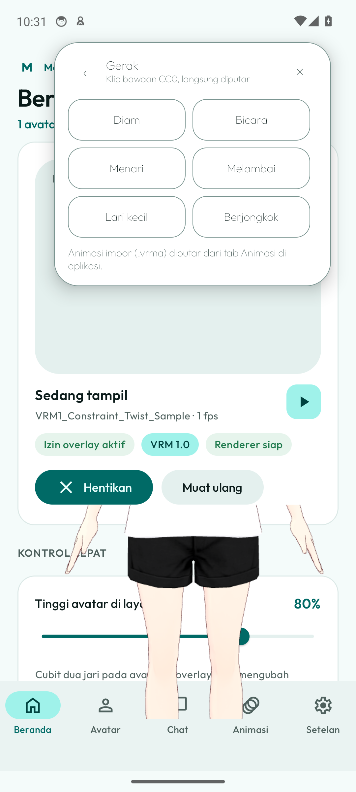
Gerakan custom langsung dari overlay
Empat klip bawaan diputar tanpa membuka aplikasi utama. Tombol menyala mengikuti klip yang sedang
berjalan; animasi impor .vrma tetap dibuka dari tab Animasi.
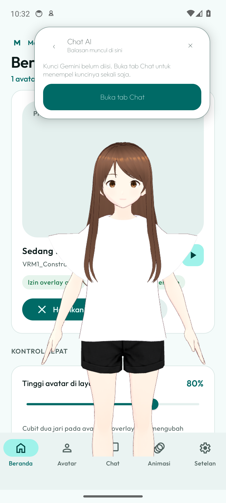
Balon obrolan di atas aplikasi lain
Balasan muncul sebagai balon dan tetap dibacakan sesuai pengaturan suara. Bila kunci Gemini belum ada, panel mengatakannya apa adanya dan menawarkan jalan ke tab Chat — bukan jawaban palsu.
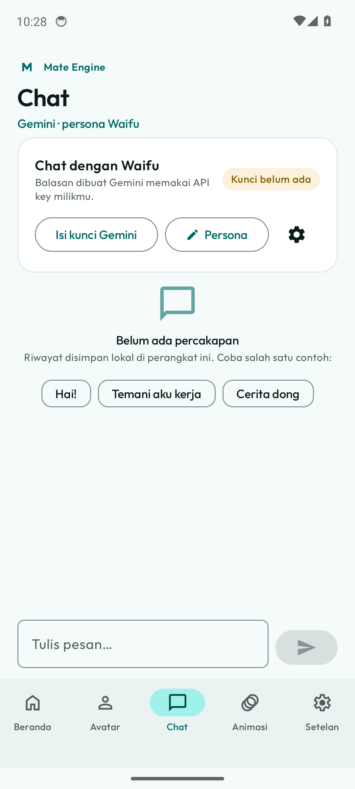
Waifu dengan kunci milikmu
Kunci Gemini disimpan terenkripsi; persona sudah terisi dan bisa diedit. Di layar sempit, opsi suara dan model dibuka lewat tombol opsi di kartu atas.
Bukti skala: dua angka, satu perbandingan
Slider "Tinggi avatar di layar" sekarang berarti persentase tinggi layar. Angka pada kedua
gambar di atas berasal dari aplikasi yang sama, hanya berbeda nilai scale:
100% memenuhi layar, 40% menjadi kecil di sudut. Sebelum perbaikan, satu nilai dipakai dua
kali (lebar jendela dan skala model) sehingga rentangnya menyusut jadi seperempat.
Yang dibuktikan galeri ini
- Aplikasi terpasang dan berjalan di Android 14 tanpa crash.
- Tab Chat tampil dengan status kunci yang jujur: belum ada kunci berarti belum bisa mengirim.
- Izin overlay, notifikasi, dan pembatasan baterai terbaca dari sistem.
- Metadata VRM asli terbaca dan ditampilkan.
- Layanan overlay dapat dijalankan dan dilaporkan statusnya.
- Navigasi, tema, dan tata letak lebar berfungsi.
Urutan pengambilan
- Pasang APK debug, izinkan overlay, isi data contoh lewat hook debug.
- Ambil 5 halaman aplikasi (Beranda, Avatar, Animasi, Diagnosa, Pengaturan).
- Tekan tombol Jalankan avatar seperti pengguna, verifikasi service lewat
dumpsys, tekan Home, lalu tangkap overlay. - Terakhir: tema gelap dan tata letak lanskap.
Yang belum dibuktikan
- Perilaku pada HP fisik dan ROM produsen (HyperOS, ColorOS, One UI, Funtouch).
- Kualitas render pada GPU ponsel; emulator memakai renderer perangkat lunak (SwiftShader).
- Ketahanan layanan saat layar mati atau Recent Apps dibersihkan.
- Interaksi drag pada layar sentuh nyata.
- Kualitas animasi pada perangkat keras sungguhan; emulator memakai SwiftShader sehingga FPS rendah.
Cara memperbarui gambar
- Jalankan workflow
Screenshotsdi GitHub Actions. - Skrip
scripts/capture-screenshots.shmemasang APK debug dan mengambil tangkapan layar. - Hasilnya di-commit otomatis ke
docs/screenshots/.